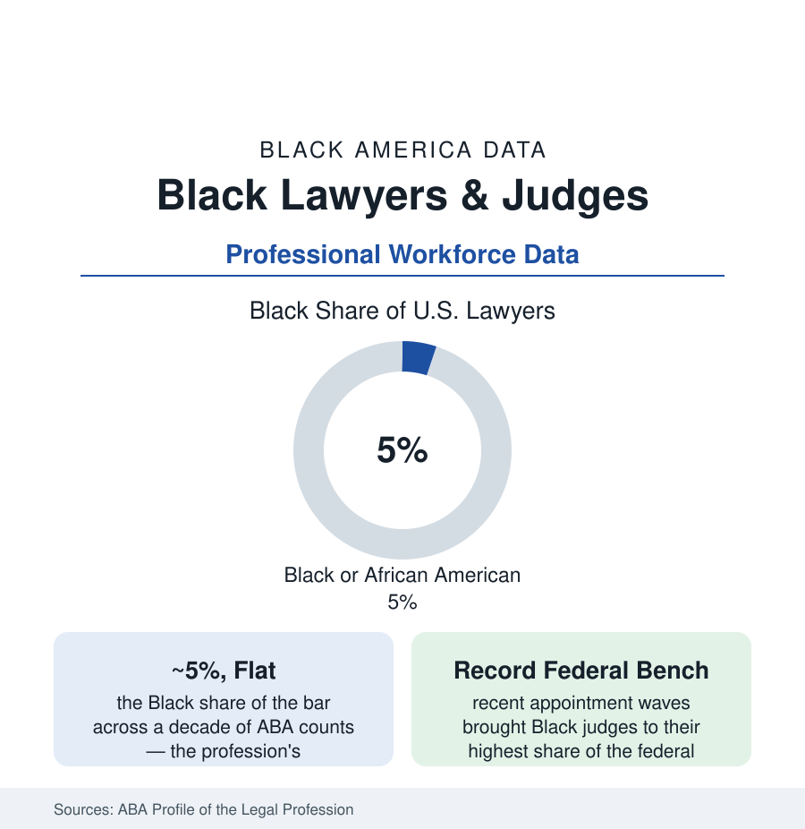

Black Employment
Black Lawyers and Judges: Five Percent of the Bar, Bench by Bench
Black attorneys are about 5% of America's lawyers — a share nearly unchanged in a decade of ABA counts — while the federal bench has reached its highest Black share in history. The legal profession's data.

The legal profession writes the rules the other sections operate under, and its own numbers are among the most static in the workforce data: Black lawyers constitute about five percent of America's attorneys in the American Bar Association's annual counts — a share that has moved within a point for a decade, through diversity initiatives, pipeline programs, and entering law classes far more diverse than the bar they join. The bench tells a faster story in patches: the federal judiciary's Black share stands at its historical high after recent appointment waves, while the state benches and the partnership ranks move at the profession's usual glacial pace. This article reads the legal file.
The Bar: Five Percent and the Funnel Above It
The ABA's Profile draws the funnel: Black students at roughly eight percent of JD enrollment in the recent disclosure years (the law-students article's file) — from which the bar's five percent is produced by the gauntlet between: bar-examination passage (the state-published pass-rate data showing the by-now-familiar gaps, widest on first attempts, narrowing on repeats — with the exam's own validity audits a live professional controversy), the hiring funnel into the firms (the NALP data: Black associates at roughly five to six percent of large-firm associate classes, Black partners at about two percent of equity partnership in the recent counts — the profession's steepest internal gradient), and the attrition curve (the 'After the JD' longitudinal studies tracking Black lawyers' exits from firm practice at the highest rates of any group). The distribution of those who stay spreads wider than the firm story: government practice (prosecutors' and public defenders' offices, agency counsel — the public-sector article's legal corps, where Black representation runs meaningfully higher), in-house departments (whose chief legal officers include a visible Black cohort at major companies in the corporate-leadership data), solo and small-firm practice (the community's storefront law — the personal-injury, family, and defense practices of every Black business district in the cities section), and the judiciary itself.
The Bench: Federal Records, State Variance
The Federal Judicial Center's biographical data give the federal bench its ledger: across history, Black judges are roughly seven to eight percent of all Article III appointees; among currently serving judges the share stands higher — in the low teens by the recent counts — after appointment waves in the 2020s that seated a record number of Black judges, including a historically large cohort of Black women (whose share of the federal bench had been a fraction of a percent within living memory). The state benches vary by their making: states that choose judges by appointment show one pattern, states that choose judges by partisan ballot another (avoiding nothing here — the data simply record different levels), and the National Center for State Courts' counts put Black judges at roughly eight to nine percent of state judgeships overall, concentrated in the urban trial courts — the benches a Black litigant is likeliest to face being, in the big counties, the most representative in the system. The prosecution and defense leadership (district attorneys of the major counties — a cohort that grew notably in the 2010s in the appointment and ballot data; the federal defender and U.S. Attorney rosters) completes the system's command level, where the counts remain nameable.
The Institutions: Bar, Bench, and the Long Memory
The profession's Black institutions are among the oldest in this atlas: the National Bar Association (founded 1925, when the ABA's door was closed — its membership and judicial-council data a parallel census of the profession), the Black law-student and judicial associations of every major market, and the HBCU law schools (six ABA-accredited — Howard's above all, whose alumni include the architect-generation of the civil-rights bar and a judgeship pipeline out of all proportion to its class sizes; the education article's record). The profession's memory is institutional in a way few others' is: the civil-rights litigation tradition is not this profession's past but its curriculum, taught in the schools its subjects built. The current pipeline fights are equally concrete in the data: the LSAT-and-admissions file after the affirmative-action decisions (the law-school enrollment data's current watch — first post-decision classes showing Black enrollment declines at several prominent schools in the ABA disclosures), the bar-exam reform movement, and the debt ledger (Black law graduates carrying the profession's highest average loan balances in the access-group surveys — the earnings race run with the heaviest pack).
Reading the Legal Data
Five percent of the bar, two percent of the partnerships, a record share of the federal bench, and the profession that argued every other section's remedies into law: the legal file is a study in leverage — a small professional population whose placement (the courtroom, the counsel table, the bench) multiplies its weight in American life far past its count. The ABA's next decade of counts will show whether the funnel finally widens, or whether five percent is the profession's resting state.
More in Black Employment
The Black Unemployment Rate: The Two-to-One Pattern
Black unemployment runs at roughly twice the White rate — 5.5 percent against 3.3 percent in annual averages — a ratio stable across five decades of federal data. How it is measured and why it persists.
Black Median Weekly Earnings: The 80-Cent Ratio
Black full-time workers earn a median of about $900 a week — roughly 80 cents for every dollar White workers earn. The BLS earnings data by group, gender, and occupation.
Black Labor Force Participation: Working at National Rates
Black labor force participation runs at roughly the national rate — and Black women participate at higher rates than White women. The BLS participation data.
Source: American Bar Association National Lawyer Population Survey and Profile of the Legal Profession; Federal Judicial Center; National Center for State Courts; Law School Admission Council and ABA law-school disclosures.